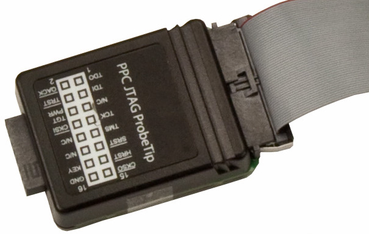
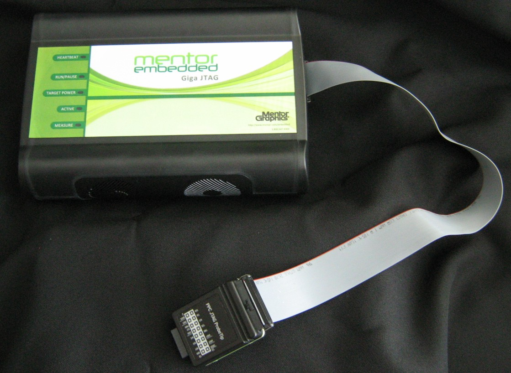
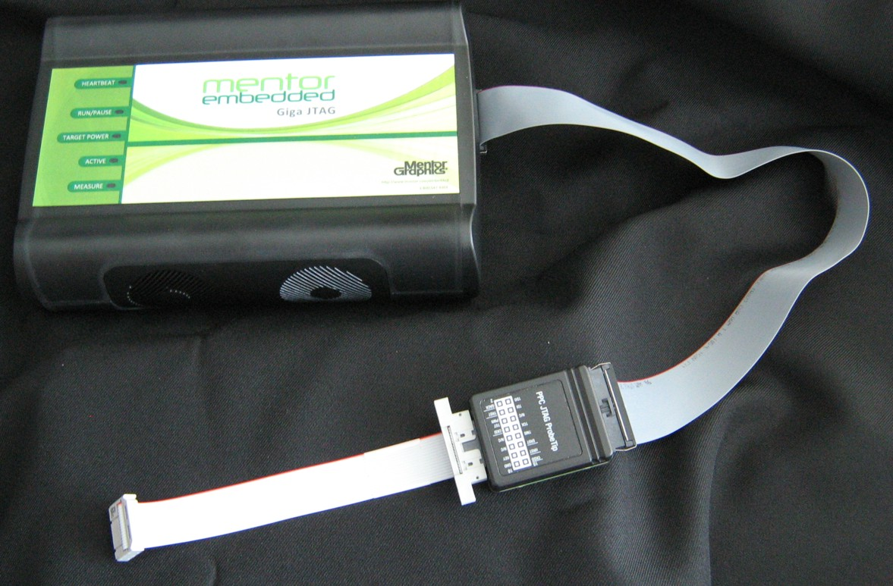

Debug Port Connector Information
Sourcery Probe Professional offers debugging capabilities without modifying any target system code or any special I/O port in the target system for communication with a monitor. Target system connections for PowerPC/COP, MIPS/EJTAG, ARM® EmbeddedICE, and CoreSight can be made using the JTAG port.
You can connect the probe to the target system in any of the following ways:
- Connect to the JTAG header on the target system directly with the probe tip. See "Connecting the Probe Tip Directly to a Debug Port Connector".
- Connect to the JTAG header on the target system using a flexible extension cable that is provided with the probe. Use it when more clearance is required. See "Connecting the Probe Tip to a JTAG Header Using the Extension Cable".
- Connect to the target system JTAG signals using a Target Adapter Module (TAM). Use it when the target system debug connector differs from the probe tip connector. See "Connecting the Probe to a JTAG Header Using a Target Adapter Module".
| Caution | |
|
Failure to connect the probe tip connector to the target system might damage the probe or target system. Verify all connections before applying power. |
|
|
|
Product Model |
||
|
|
ARM |
PA or PPC |
MIPS |
|
Probe Tip Debug Connector |
ARM-20 |
COP-16 |
MIPS-14 |
|
TAM Accessories1
|
TAM-ARM20-ARM14 TAM-ARM20-TI14 TAM-ARM20-TI20 TAM-ARM20-CTX10J TAM-ARM20-CTX20J |
- |
TAM-MIPS14-MIPSJ12 |
1TAM accessories are sold separately. Consult the Mentor Embedded Sourcery Probe Target Connections application note to determine TAM part numbers.
“Debug Connector Information” describes the debug port connector specifications.
Connecting the Probe Tip Directly to a Debug Port Connector
If your target system has a standard debug port connector, you can directly connect the probe tip of the probe directly to the target system debug port connector.
Procedure
- Turn off the power to the target system and the probe.
- Verify all the pins of the probe tip are properly aligned with the debug port connector on the target system. Use mechanical keying and the label on the probe tip as a guide. The PowerPC probe tip is shown in Figure 3‑1 (ARM and MIPS probe tips are similar).
Figure 3‑1. Sourcery Probe Professional PPC JTAG/COP Probe Tip
- Connect the probe tip 50-pin ribbon cable to the RUN CONTROL connector on the probe as shown in Figure 3‑2.
|
Tip: If you have a PowerPC probe tip that is labeled “PA JTAG Probe Tip”, this works exactly the same as the “PPC JTAG Probe Tip” shown above. The only difference is the label on the hardware. |
|
Figure 3‑2. Sourcery Probe Professional with PPC-JTAG Probe Tip
- Gently (but firmly) press the probe tip onto the target system debug port header. Make sure that you properly align the multi-pin socket connector with the multi-pin header on your target system.
Connecting the Probe Tip to a JTAG Header Using the Extension Cable
Use the supplied flexible probe tip extension cable to connect the Sourcery Probe Professional to your target system if there is not enough clearance for the standard probe tip to fit onto the target system JTAG header.
Procedure
- Turn off the power to the target system and the probe.
- Attach the multi-pin header end of the flexible probe tip extension cable to the JTAG socket of the probe tip as shown in Figure 3‑3.
Figure 3‑3. Flexible Probe Tip Extension Cable Attached to JTAG/COP Header
The red stripe on the cable identifies pin 1. The pin assignment of the cable is identical to that of the probe tip socket.
- Connect the other end of the flexible probe tip extension cable to the debug port header on your target system.
Connecting the Probe to a JTAG Header Using a Target Adapter Module
Use a Target Adapter Module (sold separately) if your target provides a different type of debug connector than the probe tip.
Procedure
- Turn off power to the target system and the probe.
- Attach the TAM to the probe tip.